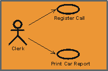
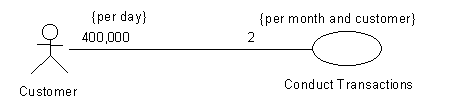
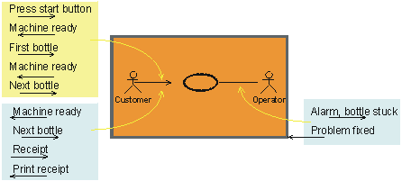

| Guideline: Communicate-Association |
 |
|
| Related Elements |
|---|
ExplanationUse cases and actors interact by sending signals to one another. To indicate such interactions we use a communicate-association between use-case and actor. A use-case has at most one communicate-association to a specific actor, and an actor has at most one communicate-association to a specific use-case, no matter how many signal transmissions there are. The complete network of such associations is a static picture of the communication between the system and its environment. Communicate-associations are not given names. Because there can be only one communicate-association between a use-case and an actor, you need only specify the start and end points to identify a particular communicate-association.
 A line or arrow between an actor and a use case indicates they interact by sending signals to one another. RolesEach end of a communicate-association is a role specifying the face that a use case or actor plays in the association. The roles are used to specify multiplicities and directions of the association (see below). MultiplicityEach role of a communicate-association indicates the multiplicity of its type, that is, how many instances of that actor or use case can be associated with one instance of the other use case or actor. Multiplicity is indicated by a text expression on the role. The expression is a comma-separated list of integer ranges. A range is indicated by an integer (the lower value), two dots, and an integer (the upper value); a single integer is a valid range, and the symbol '*' indicates "many", that is, an unlimited number of objects. The symbol '*' by itself is equivalent to '0..*', that is, any number including none; this is the default value. An optional scalar role has the multiplicity 0..1. The multiplicity may be augmented with a time unit constraint. This is done to state how many instances that may be associated, possibly by different instances, during the time unit. This information is useful since it can tell us if the use case is performed often, and also how often each actor instance employs the use case. Example:
 The Conduct Transactions use case is used 400,000 times per day by Customers. Each Customer employs the use case two times per month. NavigabilityEach role of a communicate-association has a navigability property, indicating who initiates communication in the interaction. Navigability is shown by an open arrowhead. If the arrowhead points to a use case, the actor at the other end of the association initiates the interaction with the system. If the arrowhead points to an actor, the system initiates the interaction with the actor. Two-way navigability is shown by a line with no arrow-heads (two arrow-heads tends to clutter diagrams).
 The communication arrow defines the actor that initiated the use case. For each communication arrow the return message is assumed. A line with no arrow heads assumes two-way communication. Do not confuse navigability with data flow; it is used to show initiation of communication only. For example, a customer request for data is shown by an arrow to the use case representing the system, even though most of the data flows from the system to the customer.
Communication from Actor to
Use Case
|
© Copyright IBM Corp. 1987, 2006. All Rights Reserved. |